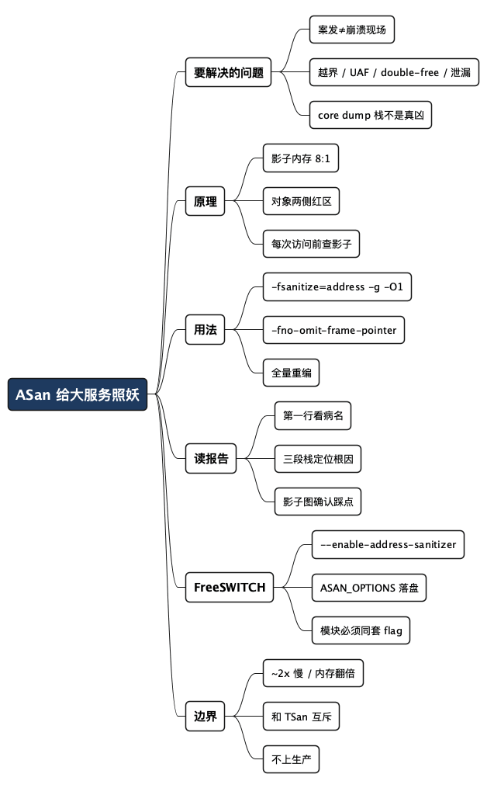

给 FreeSWITCH 这种大服务生成 ASan 报告：内存踩坑的照妖镜
Posted on 二 13 10月 2026 in Tech
| Abstract | 给 FreeSWITCH 这种大服务生成 ASan 报告：内存踩坑的照妖镜 |
|---|---|
| Authors | Walter Fan |
| Category | Tech |
| Status | v1.0 |
| Updated | 2026-10-13 |
| License | CC-BY-NC-ND 4.0 |
大纲
展开看看
- 内存 bug 为什么最磨人：越界写、释放后再用、漏释放，这三类问题的共性是"案发现场和崩溃现场不在一处"，等它崩的时候栈早就不是真凶了。
- ASan 是什么：编译器给每次内存访问插一道检查，配合"影子内存"记录每个字节能不能碰。踩了就当场抛报告、打调用栈，把偶发 bug 变成稳定复现的报错。
- 原理一句话：8 个字节的内存状态压进 1 个影子字节；对象前后放"红区"；释放后整块标脏。访问前先查影子，脏就报错。
- 小例子跑一遍：十几行 C 代码，从编译参数到报告，先把流程走通。
- 怎么读报告：报错类型、出事地址、三段调用栈（现在谁在碰、当初谁分配、当初谁释放）、影子内存那张图。
- 上大服务：FreeSWITCH：它自带
--enable-address-sanitizer，怎么编、怎么跑、运行时环境变量怎么配、符号化怎么弄全。 - 代价和边界：约 2 倍慢、内存翻几倍，不能带上生产；和 TSan 互斥；第三方库、信号、
LD_PRELOAD这些坑。
写服务端 C/C++ 的人，多半都接过这样一个 case：线上某个进程每隔几天崩一次，core dump 捞回来，栈里一半是问号，另一半指向一个"看起来完全没问题"的函数。你盯着那段代码看半天，复现不出来，最后只能加日志、改重启策略，把问题"熬"过去。
这类问题的真正麻烦不在于难，而在于案发现场和崩溃现场根本不在一处。你越界写了一个字节，它悄悄改坏了隔壁对象的一个指针；几万次调用之后，那个指针被解引用，程序才崩。崩的地方和真凶隔着十万八千里，栈再漂亮也没用。
AddressSanitizer（下文简称 ASan）就是来解决这件事的：编译时加一个参数，运行时你一越界、一 use-after-free、一 double-free，它当场把程序停住，打出带文件行号的调用栈。 本来要熬一个礼拜的玄学 bug，它在你写出来的那一刻就报给你看。这篇给一套能直接照抄的流程——从一个十几行的小例子，到 FreeSWITCH 这种上百万行的大服务——并说清它为什么好用，以及为什么不能带着上生产。
- ASan 查的是内存访问错误：堆/栈/全局越界、use-after-free、double-free、内存泄漏。
- ASan 不是银弹：它查不了数据竞争（那是 ThreadSanitizer 的活），也不该出现在生产环境。
下面的命令和报告均在 macOS（Apple clang）与 Linux（gcc/clang）上的通用做法，FreeSWITCH 的具体行为以你本地的版本为准；无法核实到具体版本的地方我会标出来。
内存 bug 为什么是服务端的老大难
先把敌人认清楚。C/C++ 里最常见、最难查的内存问题就三类：
| 类型 | 通俗说 | 典型后果 |
|---|---|---|
| 越界访问（buffer overflow） | 数组开 8 个字节，你写到第 9 个 | 改坏隔壁数据，或崩在别处 |
| 释放后使用（use-after-free） | free 了还接着用那块内存 |
读到脏数据，或崩在别处 |
| 重复释放 / 漏释放（double-free / leak） | 同一块 free 两次，或 malloc 了忘了还 |
堆结构损坏 / 内存持续上涨 |
它们有个共同的坏毛病：不立即崩。越界写了一个字节，内存还在、程序照跑，等那块内存被别人读到或者堆管理器自己发现结构坏了，才崩。所以你拿到的 core dump，栈顶往往是个无辜的受害者，真凶早就跑路了。
传统办法有两条路，各有各的难受：
- 人肉 + core dump + 日志：靠经验猜，靠运气复现，大服务上基本是"熬"。
- Valgrind：能查，但它是纯运行时模拟，慢得发指——十几倍甚至几十倍的 slowdown，大服务跑起来约等于不可用。
ASan 走的是第三条路：编译期插桩。它不靠事后猜，而是在编译时就把检查代码焊进每一次内存访问里，访问的那一刻就判断"这块你能不能碰"。慢，但只慢大约 2 倍，大服务也扛得住。这是它和 Valgrind 最根本的区别。
ASan 的原理：影子内存 + 红区
不懂原理也能用 ASan，但懂了之后你读报告会快很多，尤其是报告末尾那张"影子内存图"。这一节讲清三个词：影子内存、红区、插桩。读过的可以跳到下一节。
影子内存（shadow memory）：ASan 启动时，额外占用约 1/8 的地址空间，专门用来记录"你的每一块内存现在能不能访问"。规则是 8 个应用字节，对应 1 个影子字节——因为内存通常按 8 字节对齐，一个影子字节足够描述这 8 个字节的状态。影子字节的值很简单：0 表示这 8 个字节全部可访问；正数 k 表示前 k 个可访问、后面不可；负数表示整块都不可碰（而且用不同的负值区分"这是红区"还是"这是已释放的内存"）。
地址到影子地址的换算也很直接，就是一次移位加一个偏移：
// 概念示意：把应用地址映射到它的影子字节地址
shadow_addr = (app_addr >> 3) + Offset; // >>3 就是除以 8；Offset 是平台相关的常量
红区（redzone）：ASan 在每个对象的前后各塞一段"毒区"，并把对应的影子字节标成"不可访问"。你一旦越界读写，碰到的就是红区，影子字节是负数，当场报错。栈、堆、全局变量都是这么保护的。
插桩（instrumentation）：编译器在每一次 load/store 之前，自动插一小段检查——算出影子地址、读影子字节、不为 0 就走慢路径判断到底越了没，越了就 ReportAndCrash。一次内存访问的代价，大致是这样一段逻辑：
// 概念示意：每次内存访问前，编译器自动插入的检查
byte shadow = *(byte*)((addr >> 3) + Offset);
if (shadow != 0) {
if (SlowPathCheck(shadow, addr, access_size))
ReportError(addr, access_size, is_write); // 打报告 + 调用栈 + 退出
}
把这三件事串起来就是 ASan 的全部套路：分配时给对象围上红区、释放时把整块标脏、每次访问前查一眼影子。越界撞红区、use-after-free 撞脏块，都是"影子字节不为 0"这同一个判断。原理就这么朴素。
先跑通一个小例子
大服务之前，先用十几行代码把流程走通。看着踩坑：
// uaf.c —— 一个故意写坏的例子：释放后再用
#include <stdlib.h>
#include <string.h>
int main(void) {
char *p = malloc(16);
strcpy(p, "hello");
free(p);
return p[0]; // use-after-free：free 之后还读 p[0]
}
编译时加三个关键参数：
# -fsanitize=address 开启 ASan；-g 保留符号给出文件行号；
# -fno-omit-frame-pointer 让调用栈更准（否则栈可能缺帧）
clang -fsanitize=address -g -fno-omit-frame-pointer -O1 uaf.c -o uaf
./uaf
运行，ASan 当场抛出报告（下面是简化后的结构，真实输出更长）：
==12345==ERROR: AddressSanitizer: heap-use-after-free on address 0x602000000010 ...
READ of size 1 at 0x602000000010 thread T0
#0 0x... in main uaf.c:9 <- 现在谁在碰这块内存
...
0x602000000010 is located 0 bytes inside of 16-byte region [...]
freed by thread T0 here: <- 这块当初是谁 free 的
#0 0x... in free
#1 0x... in main uaf.c:8
previously allocated by thread T0 here: <- 这块当初是谁 malloc 的
#0 0x... in malloc
#1 0x... in main uaf.c:6
SUMMARY: AddressSanitizer: heap-use-after-free uaf.c:9 in main
注意看：报告一口气给了你三个现场——现在谁在碰（第 9 行读）、当初谁释放（第 8 行 free）、当初谁分配（第 6 行 malloc）。换成 core dump，你顶多拿到第一个，另外两个得自己考古。这就是 ASan 省事的地方。
怎么读懂一份 ASan 报告
报告再长，骨架就四块。拿到任何一份都照这个顺序看：
-
第一行：错误类型 + 出事地址。
heap-use-after-free、heap-buffer-overflow、stack-buffer-overflow、global-buffer-overflow、double-free、detected memory leaks——看类型就知道往哪个方向查。 -
访问栈：现在谁在碰。
READ of size 1/WRITE of size 4告诉你读还是写、碰了几个字节，底下的#0 #1 #2就是当前调用栈。这是"案发时"的现场。 -
分配 / 释放栈：这块内存的来历。
allocated by和freed by两段，告诉你这块内存当初在哪malloc、在哪free。内存 bug 的根因八成藏在这两段里，而不是访问栈里。 -
影子内存图：出事点周围的内存地形。 报告最后那张
Shadow bytes around the buggy address，就是前面讲的影子字节。00是干净可访问，fa是堆左红区，fd是已释放的堆内存，f1是栈左红区……箭头指着的那个字节就是你踩的点。对照一眼，立刻知道自己是越到了红区（越界）还是踩进了脏块（use-after-free）。
Shadow bytes around the buggy address:
...
=>0x0c047fff8000: fa fa[fd]fd fd fd fd fd fa fa 00 00 ...
...
Heap left redzone: fa <- 堆对象左边的红区
Freed heap region: fd <- 被 free 掉的堆内存
一句话记法：第一行看病名，中间看三段栈定位根因，最后看影子图确认踩点。
上大服务：给 FreeSWITCH 生成 ASan 报告
小例子跑通了，重点来了——怎么把这套东西用在 FreeSWITCH 这种上百万行、几十个模块的大型 C 服务上。
好消息是：FreeSWITCH 自己就内置了 ASan 开关。 它的 configure.ac 里有一段，专门提供 --enable-address-sanitizer 选项，打开后会往 CFLAGS、CXXFLAGS、LDFLAGS 里加上 ASan 需要的参数（大致是 -fsanitize=address -fno-omit-frame-pointer -fstack-protector-strong）。所以你不用自己去改 Makefile，直接用它的构建开关就行。
第一步：带 ASan 编译
# 从源码构建 FreeSWITCH，开启 ASan
./bootstrap.sh -j # 生成 configure（源码树首次构建需要）
./configure --enable-address-sanitizer \
--enable-debug \
CFLAGS="-g -O1" # -O1 让报告更可读，-g 给文件行号
make -j"$(nproc)"
几个要点：
- 别用
-O2/-O3。 高优化会把函数内联、把变量优化掉，ASan 报告里的调用栈和变量名会变得没法看。-O1是可读性和速度的平衡点。 - 带上
-g。 没有调试符号，报告里全是地址没有文件行号，等于白跑。 - 全量重编。 ASan 要求插桩代码和运行时一致，如果你只重编了一部分、链接了没插桩的旧
.o，行为会很诡异。改了 flag 就make clean重来。
第二步：带着环境变量跑
编出来的 FreeSWITCH 二进制已经把 ASan 运行时静态链进去了，直接跑就行。但有几个环境变量强烈建议配上：
# ASAN_OPTIONS 控制运行时行为；下面这组是服务端排查的常用组合
export ASAN_OPTIONS="detect_leaks=1:halt_on_error=0:log_path=/var/log/fs_asan:abort_on_error=0:print_stats=1"
# 让报告里的地址自动翻译成"函数名 + 文件:行号"，否则你得手动 addr2line
export ASAN_SYMBOLIZER_PATH="$(command -v llvm-symbolizer)"
# 前台跑，方便直接看输出；正式排查时用 log_path 落盘更稳
./freeswitch -nonat -nf
ASAN_OPTIONS 里这几个值的含义：
| 选项 | 作用 | 服务端建议 |
|---|---|---|
detect_leaks=1 |
退出时报内存泄漏 | 开，但大服务退出时泄漏噪声多，见下文 |
halt_on_error=0 |
报错后不立刻退出，继续跑 | 服务端常设 0，一次跑尽量多收集几个报告 |
log_path=/path |
报告写到文件而不是 stderr | 强烈建议，否则和业务日志混在一起 |
abort_on_error=1 |
报错时 abort() 产生 core |
要配合 gdb 时开 |
print_stats=1 |
退出时打印统计 | 可选 |
detect_leaks底层是 LeakSanitizer（LSan），在 Linux 上随 ASan 自动启用，在进程退出时扫一遍。像 FreeSWITCH 这种长期运行、退出时未必清理所有资源的服务，退出时的泄漏报告会有不少"善意泄漏"（进程反正要死了，没必要 free 的全局缓存）。真要查泄漏，用LSAN_OPTIONS加一个 suppression 文件把这些已知噪声屏蔽掉，别一股脑全当 bug。
第三步：触发问题 + 符号化
跑起来之后，照你平常复现问题的路子操作——打电话、发 SIP 消息、加载某个有问题的模块。一旦踩到内存错误，log_path 指定的文件里就会出现一份完整报告。
如果报告里还是地址没有函数名（常见于符号化没配好），手动翻译：
# 把报告里的 "0x... (/usr/lib/.../mod_xxx.so+0x1234)" 翻译成文件行号
llvm-symbolizer --obj=/usr/lib/freeswitch/mod/mod_xxx.so 0x1234
# gcc 工具链用 addr2line：
addr2line -e /usr/lib/freeswitch/mod/mod_xxx.so -f -C 0x1234
一个真实的佐证
这套路子在 FreeSWITCH 生态里是实打实用的。FreeSWITCH 依赖的 SIP 协议栈 sofia-sip，就有过用 ASan 发现并记录的安全漏洞——它的漏洞复现步骤里，正是 CFLAGS="-fsanitize=address" LDFLAGS="-fsanitize=address" ./configure && make，然后喂一个构造好的 STUN 报文，ASan 当场抛出 heap-buffer-overflow。
代价和边界：它为什么不能上生产
ASan 好用，但它是调试工具，不是生产防护。把代价和边界讲清楚，比吹它多强更重要。
- 性能代价约 2 倍。 每次内存访问都多一道检查，官方的说法是大约 2x slowdown。对 FreeSWITCH 这种对时延敏感的实时通信服务，2 倍意味着通话质量明显下降——所以 ASan 版本只能在测试/预发环境压，不能顶线上流量。
- 内存翻几倍。 影子内存吃掉约 1/8 地址空间，加上每个对象两侧的红区，常驻内存会明显膨胀。内存紧张的机器上要留意。
- 和 TSan 互斥。 AddressSanitizer 和 ThreadSanitizer（查数据竞争的）不能同时开。内存错误用 ASan，数据竞争用 TSan，分两次构建、两次跑。ASan 可以和 UndefinedBehaviorSanitizer（UBSan）一起开（
-fsanitize=address,undefined），一趟多抓一类问题。 - 第三方库和插件。 FreeSWITCH 大量用动态加载的模块（
mod_*.so）。只要主程序带 ASan 编译，加载的模块也必须用同一套 flag 编——否则模块里的内存访问没插桩，ASan 看不见，照样漏报。混编是大服务上最常见的坑。 - 信号和
LD_PRELOAD。 ASan 会接管malloc/free并注册信号处理，和某些自己装信号处理器、或者用LD_PRELOAD挂钩内存分配的组件可能打架。遇到诡异行为，先怀疑这一层。
一句话：
ASan 是你在测试环境里举着的照妖镜，不是披在生产上的盔甲。 让它在 CI、在压测、在复现环境里跑；上线前把它卸掉。
总结：把偶发内存 bug 变成当场报错
内存 bug 难，难在"案发和崩溃不在一处"。ASan 的全部价值，就是把这个时间差消灭掉——你一踩错，它当场停、当场打栈，连带告诉你这块内存当初是谁分配、谁释放的。对 FreeSWITCH 这种大服务，它还贴心地内置了 --enable-address-sanitizer，省了你改构建系统的功夫。
照抄清单：
- 编译：
./configure --enable-address-sanitizer --enable-debug CFLAGS="-g -O1"，然后make clean && make。别用-O2，别留旧.o。 - 运行：配好
ASAN_OPTIONS（log_path、halt_on_error=0、detect_leaks=1）和ASAN_SYMBOLIZER_PATH，前台跑或落盘。 - 复现：照平常路子触发问题，等
log_path里出报告。 - 读报告：第一行看病名 → 三段栈定位根因（重点看 allocated/freed）→ 影子图确认踩点。
- 符号化：地址没翻译就用
llvm-symbolizer/addr2line手动补。 - 收尾：泄漏噪声用 suppression 屏蔽；上线前务必卸掉 ASan 版本。
内存问题最怕的是"熬"。与其等它半夜崩给你看，不如在测试环境里举起这面照妖镜，让它在你写出来的那一刻就现原形。
全文思维导图
@startmindmap
<style>
mindmapDiagram {
node {
BackgroundColor #F8F9FA
RoundCorner 10
Padding 10
FontSize 13
}
:depth(0) {
BackgroundColor #1E3A5F
FontColor white
FontSize 18
FontStyle bold
}
:depth(1) {
FontSize 15
FontStyle bold
}
:depth(2) {
FontSize 13
}
}
</style>
* ASan 给大服务照妖
** 要解决的问题
*** 案发≠崩溃现场
*** 越界 / UAF / double-free / 泄漏
*** core dump 栈不是真凶
** 原理
*** 影子内存 8:1
*** 对象两侧红区
*** 每次访问前查影子
** 用法
*** -fsanitize=address -g -O1
*** -fno-omit-frame-pointer
*** 全量重编
** 读报告
*** 第一行看病名
*** 三段栈定位根因
*** 影子图确认踩点
** FreeSWITCH
*** --enable-address-sanitizer
*** ASAN_OPTIONS 落盘
*** 模块必须同套 flag
** 边界
*** ~2x 慢 / 内存翻倍
*** 和 TSan 互斥
*** 不上生产
@endmindmap

本作品采用知识共享署名-非商业性使用-禁止演绎 4.0 国际许可协议进行许可。 欢迎在我的个人网站 https://www.fanyamin.com 访问原文并评论。